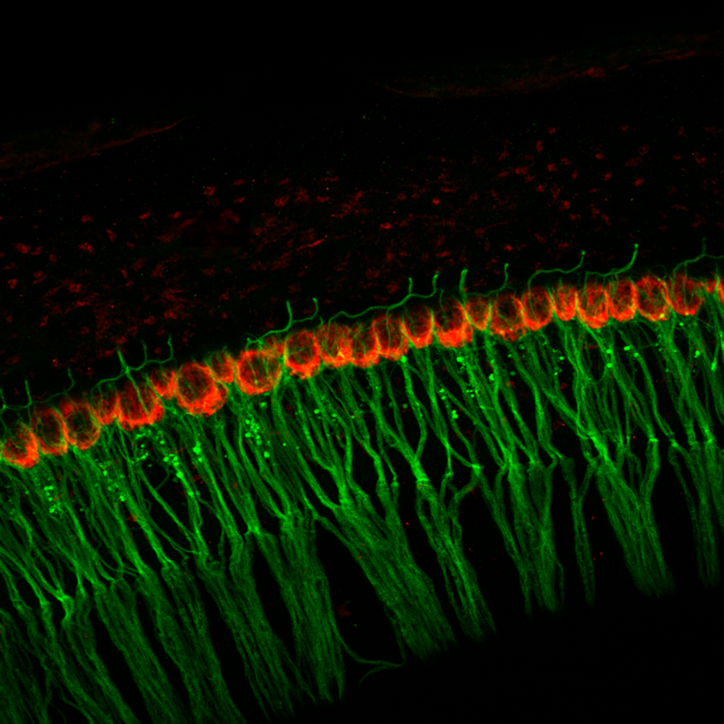
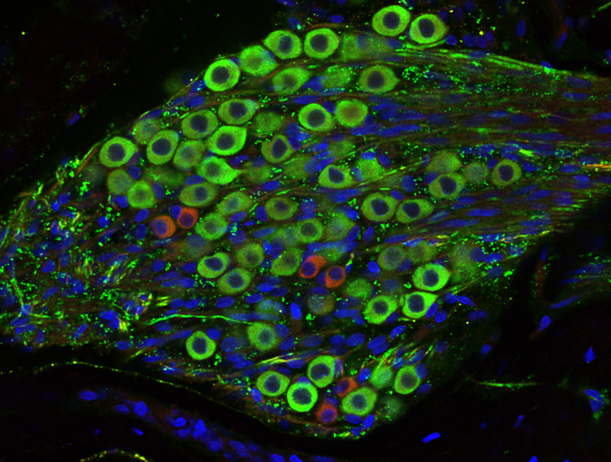

Auditory Neurons
Auditory Neurons: Another important type of cells in the cochlea is auditory neurons. Below is a microscope image of auditory neurons. Round shaped parts are neuronal cell bodies. You can see each neuron extending fibers for communication from the cell body.
Neurons talk to Hair Cells: This microscope image shows arms of neurons in green, and hair cells in red. Neurons are reaching out to make physical contact with our hair cells in the cochlea. Hair cell senses the sound with their hairs, and they pass electrical signal to neurons.
Gathering of auditory neurons: Auditory neurons gather in a cluster inside the cochlea. There are different types of neurons, for example, red small ones here and green big ones. (Blue circles are cell nuclei) We know there are several different types of auditory neurons, passing down sound information about pitch and loudness, differentially.